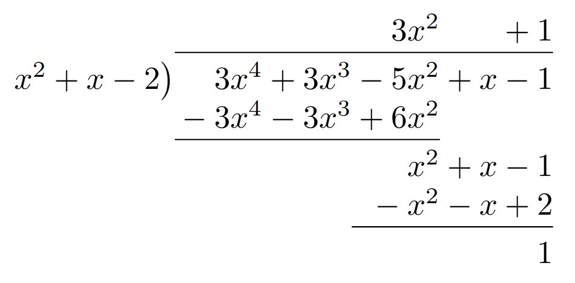

In the previous section, we left off with the problem \(\int\frac{11x^2-22x-13}{x^3-2x^2-5x+6}dx\). This was challenging—not because the process was more difficult, but—because the initial factoring required more work. There is, however, a shorter way in some cases. In the same way that Tabular IbP condensed the work needed to integrate functions, we can shorten the work to find \(A\), \(B\), and \(C\).
The Heavyside Method is a shortcut to finding the partial fractions for a rational function.
But there are some restructions:
Start with the same step as before: $$\frac{11x^2-22x-13}{x^3-2x^2-5x+6}=\frac{A}{x+2}+\frac{B}{x-1}+\frac{C}{x-3}$$
Next, make three columns—one for each of the constants to solve for. Note that there is a box (a placeholder) everywhere that \(x\) appears, except for the factor that appears below the constant in the earlier step.
$$A$$
$$\frac{11\fbox{ㅤ}^2-22\fbox{ㅤ}-13}{(x+2)(\fbox{ㅤ}-1)(\fbox{ㅤ}-3)}$$
$$B$$
$$\frac{11\fbox{ㅤ}^2-22\fbox{ㅤ}-13}{(\fbox{ㅤ}+2)(x-1)(\fbox{ㅤ}-3)}$$
$$C$$
$$\frac{11\fbox{ㅤ}^2-22\fbox{ㅤ}-13}{(\fbox{ㅤ}+2)(\fbox{ㅤ}-1)(x-3)}$$
Next, we are going to ignore the factor that is under the constant in the PFD.
$$A$$
$$\frac{11\fbox{ㅤ}^2-22\fbox{ㅤ}-13}{\xcancel{(x+2)}(\fbox{ㅤ}-1)(\fbox{ㅤ}-3)}$$
$$B$$
$$\frac{11\fbox{ㅤ}^2-22\fbox{ㅤ}-13}{(\fbox{ㅤ}+2)\xcancel{(x-1)}(\fbox{ㅤ}-3)}$$
$$C$$
$$\frac{11\fbox{ㅤ}^2-22\fbox{ㅤ}-13}{(\fbox{ㅤ}+2)(\fbox{ㅤ}-1)\xcancel{(x-3)}}$$
Now, in the boxes, we are going to put the number that makes the "ignored factor" zero.
$$A$$
$$\frac{11(-2)^2-22(-2)-13}{\xcancel{(x+2)}((-2)-1)((-2)-3)}$$
$$\frac{11(4)+44-13}{(-3)(-5)}$$
$$\frac{75}{15}$$
$$5$$
$$B$$
$$\frac{11(1)^2-22(1)-13}{((1)+2)\xcancel{(x-1)}((1)-3)}$$
$$\frac{11-22-13}{(3)(-2)}$$
$$\frac{-24}{-6}$$
$$4$$
$$C$$
$$\frac{11(3)^2-22(3)-13}{((3)+2)((3)-1)\xcancel{(x-3)}}$$
$$\frac{99-66-13}{(5)(2)}$$
$$\frac{20}{10}$$
$$2$$
After solving for \(A\), \(B\), and \(C\), we can continue the normal process of PFD.
So far, the degree in the denominator has been larger than the degree of the numerator. But what if the degree of the numerator is larger than the degree of the denominator, or if the degrees are the same? These types of functions are called improper rational functions.
To integrate an improper rational function like \(\int\frac{3x^4+3x^3-5x^2+x-1}{x^2+x-2}dx\), we need to use polynomial long division first.
So \(\frac{3x^4+3x^3-5x^2+x-1}{x^2+x-2}=3x^2+1+\frac{1}{x^2+x-2}\). Now we can integrate with the help of PFD. (PFD work not shown).
$$\begin{align} \int \frac{3x^4+3x^3-5x^2+x-1}{x^2+x-2}dx &= \int3x^2+1+\frac{1}{x^2+x-2}dx \\ &= \int(3x^2+1)dx+\int\frac{1}{x^2+x-2}dx \\ &=\int(3x^2+1)dx+\int\frac{\frac{1}{3}}{x-1}-\frac{\frac{1}{3}}{x+2} \\ &= x^3+x+\frac{1}{3}\ln|x-1|-\frac{1}{3}\ln|x+2|+C\end{align}$$